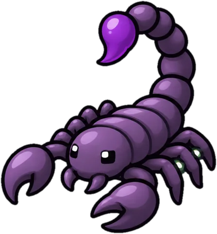

Tap a stage to read its story.
Vexnip (scorpion line) is a small purple scorpion with a smooth rounded carapace, two tiny pincers, and a thin segmented tail that curves up eagerly over its back. Its legs carry it in quick nervous skitters across the muddy banks of the Poison Marsh. Still young enough to be mostly curious, it probes every mossy rock and hollow log with its pincers. The guardians who first mapped the Poison Marsh noted that Vexlings always nest near the brightest bioluminescent fungi - they are drawn to any light in the dark.
Field note: Vexnip's tail stinger is not yet venomous - it mostly uses it to tap out a rhythm on hollow logs when content.
Poison Marsh. Vexnip and its family are found in the Poison Marsh. See everyone who lives there.
Share a Bond Food that matches its types to become friends. Vexnip loves:
A Bond Food is not a trick. It joins your spirit with the Kimuro's spirit, and only when it chooses you.
Print the Kimuro adventure packs: mazes, cards, a board game and Bond Mark medals.
See the printable packs